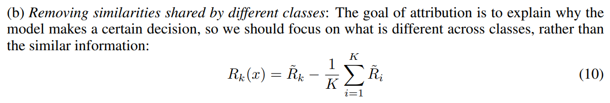
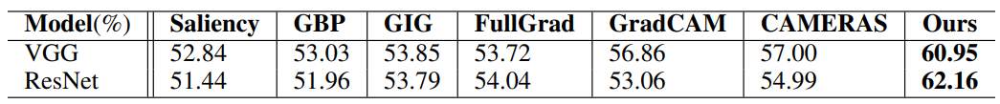

Towards Predictable Feature Attribution:
Revisiting and Improving Guided BackPropagation
Introduction
Recently, backpropagation(BP)-based feature attribution methods have been widely adopted to interpret the
internal mechanisms of convolutional neural networks (CNNs), and expected to be human-understandable (lucidity)
and faithful to decision-making processes (fidelity). In this paper, we introduce a novel property for feature
attribution: predictability, which means users can forecast behaviors of the interpretation methods. With the
evidence that many attribution methods have unexpected and harmful phenomena like class-insensitivity, the
predictability is critical to avoid over-trust and misuse from users. Observing that many intuitive improvements
for lucidity and fidelity tend to sacrifice predictability, we propose a new visual explanation method called
TR-GBP (Theoretical Refinements of Guided BackPropagation) which revisits and improves GBP from theoretical
perspective rather than solely optimizing the attribution performance. Qualitative and quantitative experiments
show that TR-GBP is more visually sharpened, gets rid of the fidelity problems in GBP, and effectively predicts
the possible behaviors so that we can easily discriminate some prediction errors from interpretation errors.
Our main contributions can be summarized three-fold:
-
In addition to lucidity and fidelity, we introduce a novel and critical property predictability
for BP-based feature attributions.
-
We propose a new predictable feature attribution method TR-GBP, by addressing two fundamental
issues in the reconstruction theory of GBP.
-
Qualitative and quantitative experiments are performed and show that TR-GBP can obtain sharper visualizations,
get rid of the fidelity problems of GBP, and enables us to discriminate some prediction errors from
interpretation errors.
Motivation
Predictability means that humans can understand and foresee the outcome of an execution,
for example, over three metres high, and one would be afraid to jump down, even if one has
never done it before. Considering that it would be too late if one did jump directly from
a high building, we cannot always mend the problem after it has arisen. Reliable and trustworthy
gradient attribution methods therefore require predictability. However, existing ideas for
improvement sacrifice predictability, so improved methods require a supporting theoretical
explanation. Here we will improve the reconstruction theory that accompanies the GBP in order
to achieve improvements to the GBP.
Reconstruction theory of GBP
As our proposed method is based on the reconstruction theory (Nie et al., 2018),
we introduce its main conclusions before further discussions.


Addressing the Limitations of Reconstruction Theory

Fig.1 Pipeline of TR-GBP. The forward propagation treats the bias as input maps fullfilled with
1, and the back propagation procedure also attribute to the middle inputs. Then we aggregate these
middle input with upsampling, and minus the mean values of top5 results.
We find two limitations:
(1) The missing of bias terms: as reconstruction theory does not take the widely adopted
bias terms into consideration, its conclusions cannot be directly applied to traditional
networks. As bias terms also contribute to decision-making processes, the missing of bias
terms will make attribution results incomplete and ignore the high-layer changes. That
is why GBP failed the sanity checks (Adebayo et al., 2018).
Our solution:

(2) The similarity of V: according to the central limited theorem and the Proposition 1,
the backpropagation results might have similar distributions for different classes, and so that GBP
is class-insensitive.
Our solution:

Experimental results
Lucidity
We perform qualitative visual evaluation for TR-GBP along with baselines on validation
set of ImageNet: saliency, GBP, GIG, GradCAM, FullGrad, CAMERAS. These methods are the
newest or the most classical attribution methods of three kinds of attributions.
Furthermore, we use the commonly used pretrained models: VGG16 and ResNet50 from torchvision
model zoo. The results are shown in Figs.2, it can be seen that saliency is full of noise,
GBP and GIG highlight the edges and FullGrad, GradCAM, TR-GBP shed light on a complete region.
This is not surprising that TR-GBP is more complete than GBP and more tightly confined to object
regions than GradCAM, FullGrad, CAMERAS, because we supplement the bias attributions for GBP and
theoretical guarantee low noise level

Fig.2 Visualization results on VGG16 and ResNet50 of
saliency, GBP, GIG, FullGrad, GradCAM, CAMERAS and our method TR-GBP.
Fidelity
We solve two fidelity problem of GBP:
(1) Class-insensitivity:Figs. 3 shows our results on cat and dog image for ResNet50.
The top1 class of output is ’bull mastiff’ and the top2 class is ’tiger cat’. It is evident
that our method can distinguish different classes, and provide entire objects
except for the tail of the cat. Such results are reasonable as we remove the
reconstruction shared by different categories.

Fig.3 Class discriminative results for TRGBP. The middle heatmap is obtained from the
class ‘bull mastiff’, and the right heatmap is obtained from the class ‘tiger cat’.
(2) Sanity checks:Adebayo et al. (2018) point out that some attribution methods are
not able to show the differences between different models, just like special edge detectors.
Specifically, they randomize some layers of model, and find that some attribution results,
especially GBP, almost remain unchanged. We also perform a sanity check of TR-GBP and present
the results in Figs. 4. As can be seen, our method is sensitive to model parameters and can
efficiently reflect the differences between models before and after randomization. Moreover,
the attribution results of TR-GPB converge to uniform with weak boundaries and random noises.

Fig.4 Sanity checks for different layers on ResNet50. From left to right, it reflect the cascade
randomization of model.
Predictability
Let us look closely at the results of Figs.4, the changes of fc layer lead to high scores in
boundaries. As we have predicted that the boundaries of attribution must be weaker,
if there are high scores in boundary pixels of TR-GBP, it must originate from model
prediction errors. Note that such boundary dependencies are also shown by previous methods,
like CAMERAS in Figs.4. Therefore, we attempt to conduct validation experiments to make sure
such boundary dependencies in our method are actually a prediction errors but others not.
Specifically, we use a metric which is similar to EBPG to represent the intensities of boundary
dependencies (IBD):

where boundary is the 16-pixel boundary regions: height, width < 16 or height, width > 224-16.
We discard half data in ImageNet validation set with the minimal IBD to obtain attribution
results with salient boundary dependencies. Note that the dependency originates from
prediction errors must have capacities to show the correctness of predictions, so we use
traditional AUC (Area Under Curve) values of ROC curve to measure whether IBD can be used
as a valid indicator to judge the correctness of model predictions. The results are shown
in Table 1. TR-GBP has remarkable advance performance, which means that the boundary
dependencies in TR-GBP are actually derived from prediction errors while other methods not,
so TR-GBP succeeds in disentangling prediction errors from interpretation errors with the
help of predictability.

Table 1 Comparative evaluation on AUC of IBD (higher is better).
Reference
Weili Nie, Yang Zhang, and Ankit Patel. A theoretical explanation
for perplexing behaviors of backpropagation-based visualizations. In International
Conference on Machine Learning, pp. 3809–3818. PMLR, 2018.
Julius Adebayo, Justin Gilmer, Michael Muelly, Ian Goodfellow, Moritz Hardt, and
Been Kim. Sanity checks for saliency maps. arXiv preprint arXiv:1810.03292, 2018.
|